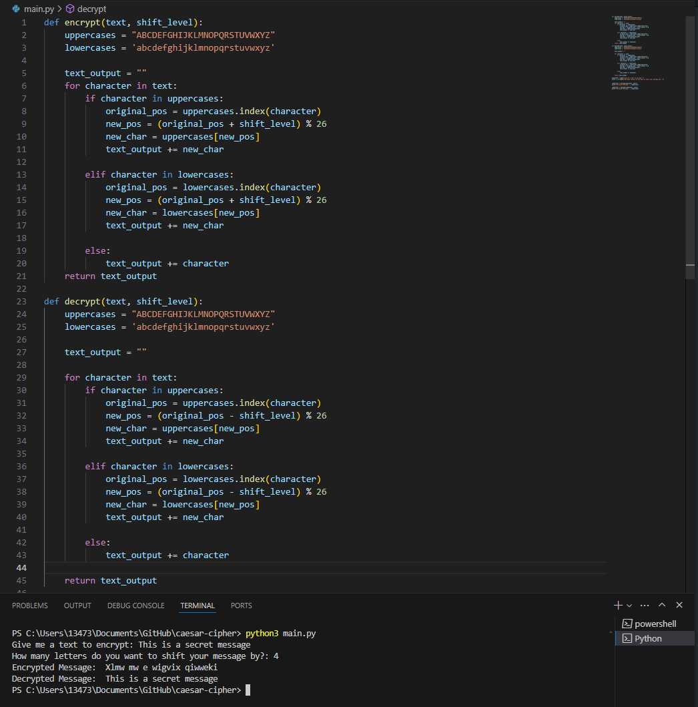

A cipher is a method that is used to encrypt information, converting plaintext into a ciphertext in order to keep information hidden or secret. A cypher usually involves a set of rules and algorithms that help convert the readable data into an unreadable format.
A cipher will require someone who has the appropriate key or method in order to be able to decrypt it back into a readable format.
Plaintext is the original or the readable format of data before there are any encryption algorithms that have been applied. It is the information that is consistent in its natural state.
Some examples of this would be a text message, a document, or an email.
Ciphertext is the transformed or encrypted output of the plaintext. Ciphertext has went through a encryption algorithm in order to make the data unreadable without an appropriate decrpytion key or method.
Some examples of this include a secure communication application or file.
The caesar cipher is a simple and old encryption technique that was named after Julius Caesar, who is reuputed to have used it in order to protect communications during war.
The caesar cipher is a simple substitution cipher in which each letter in the plaintext is shifted a fixed amount of places down or up the alphabet.
Encryption begins when you chose a shift value or key, which is the number of positions each letter in the plaintext will be shifted.
Replace each letter in the plaintext with the letter that is a fixed number of positions down the alphabet. If the end of the alphabet is reached, it wraps around to the beginning.
Decryption is similar in which the same shift value is used in the opposite direction to convert the ciphertext back to the original plaintext.
Below is a quick example of a caesar cypher written in python. When a text is input in the encrypt and decrypt function, it is shifted a number of elements based on the shift_level of the cypher that the user choses.

Although the caesar cipher is simple, it is for this exact reason it can have security issues.
The cipher is easy to break, especially with modern computational techniques. Since there are only 25 possible keys, a brute force attack can quickly reveal the plaintext.
By using frequency analysis, the cipher can also be broken by analyzing the frequency of letters in the ciphertext and comparing it to the expected frequency of letters in the language of the plaintext.